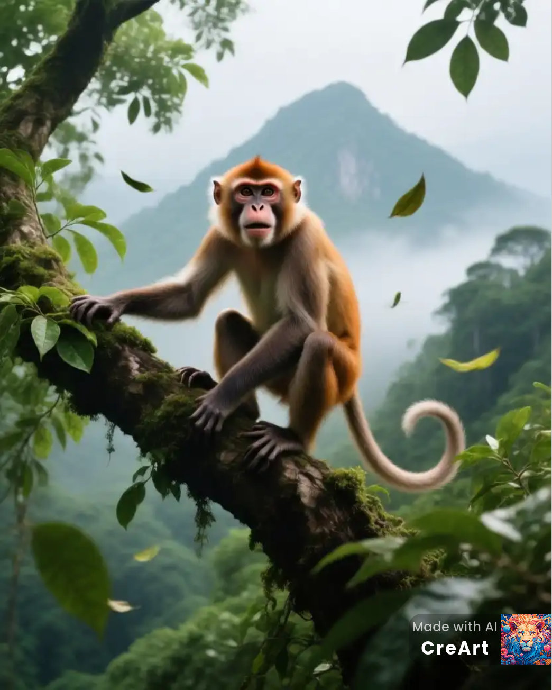

Allgemeine Informationen
Brüllaffen sind die lautesten Säugetiere des Regenwaldes. Sie teilen sich die Baumkronen mit Faultieren und kommunizieren über weite Distanzen mit ihrem markanten Brüllen.
Lebensraum & Verhalten
Sie leben in den obersten Baumkronen, ernähren sich von Blättern, Früchten und Blüten. Ihre Gruppe ist hierarchisch organisiert.
